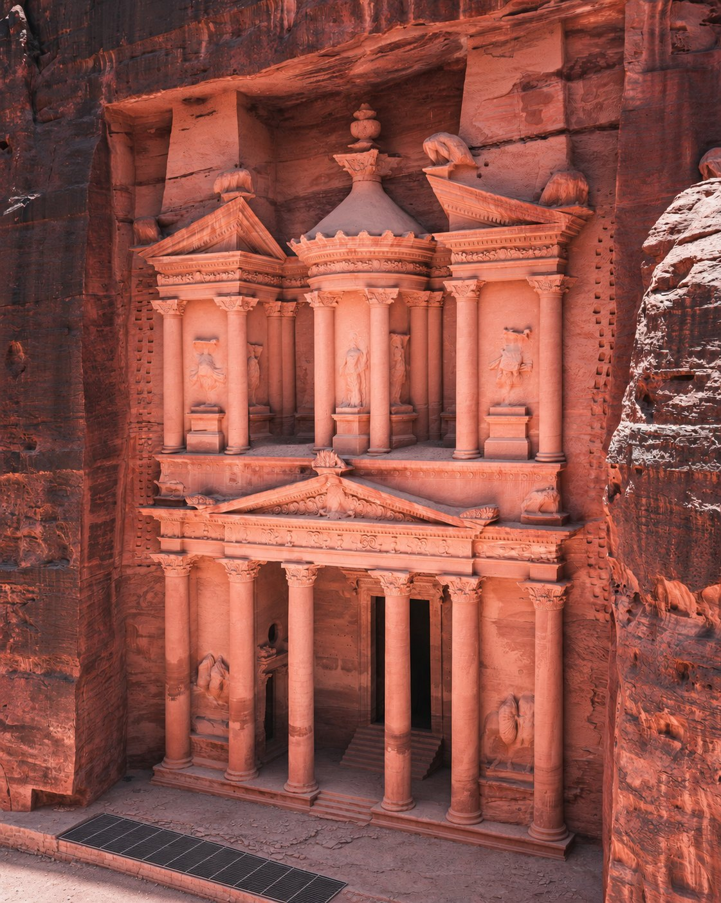

Jordan Discovery Tour
7 days · 6 nights
Jerash and the old town of Salt, the King’s Highway, two nights in Petra, Wadi Rum and the Dead Sea.
From USD 1,120 per person
Day-by-day itinerary
-
Day 1
Arrival in Amman
Overnight Amman
You’re met at Queen Alia International Airport (QAIA) and taken to your hotel in Amman.
-
Day 2
Jerash and Salt
Overnight Amman, or a resort in Salt
After breakfast, drive north from Amman to Jerash, which shows the grandeur of Imperial Rome: it is one of the largest and best-preserved sites of Roman architecture outside Italy. Continue to the old town of Salt, one of Jordan’s longest continuously inhabited towns, with a remarkable architectural and civic heritage and several recently opened museums. Return to Amman, or spend the night at a resort in Salt instead.
-
Day 3
The King’s Highway to Petra
Overnight Petra
After breakfast, spend the day on the King’s Highway, once part of the ancient Silk Road. In Madaba, the “City of Mosaics”, see the church with the Byzantine mosaic map of the Holy Land. Take a detour to the monastery on Mount Nebo. The Bible tells how Moses climbed the mountain from the plains of Moab and was shown “all the land” promised to his descendants. Head south through Wadi Al-Mujib, a deep valley with one of Jordan’s most breathtaking views, and visit the Crusader castle of Shobak before continuing to Petra, the city of the Nabataeans.
-
Day 4
Petra
Overnight Petra
After breakfast, spend the morning in Petra, the rose-red city of the Nabataeans. Your guided tour starts with a horse ride to the Siq, then continues on foot to explore this World Heritage site.
-
Day 5
Little Petra and Wadi Rum
Overnight Desert camp, Wadi Rum
After breakfast, visit Al-Beida, near Petra, where the Nabataeans received their guests. Continue south to Wadi Rum, Jordan’s largest desert and one of the most spectacular places on Earth, for a 4×4 tour, then watch the sunset over a glass of Bedouin tea before dinner at a desert camp.
-
Day 6
Wadi Rum to the Dead Sea
Overnight Dead Sea resort
After breakfast, leave Wadi Rum for the Dead Sea, the lowest point on Earth and its largest natural spa. Float in the water, with the option of a massage or a mud bath.
-
Day 7
Departure
After breakfast, transfer to Queen Alia International Airport (QAIA) for your flight home.